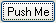

(name = "Button", command = false, font = "", size = "",
weight = "", no_tabstop = false, defaultButton = false, style = 0,
tip = false, pad = false)
Creates a Windows "button" control with the push-button style.
If the tip argument is provided (value should be a string), then the tip is displayed when the mouse pointer is positioned over the button.
pad can be used to specify padding in pixels, for example:
(Button 'Go' pad: 20)
pad should normally be even since it is split before and after the text. The default pad is the height of the button rounded up to an even number.
Sends "On_" $ name to its controller when clicked.
.Name is set to name with leading and trailing whitespace removed, spaces converted to underscores, and characters other than letters and number removed.
If xmin is passed like "5em" the numeric part will be multiplied by the font height. This is useful to make several buttons the same size, but still allow for different font sizes.
defaultButton gives the button the appearance of a default button (by adding the BS.DEFPUSHBUTTON style).
NOTE: defaultButton does not make the button the actual default button in a dialog. If this is what you want, specify DefaultButton: <name> on the top level control in the Dialog.